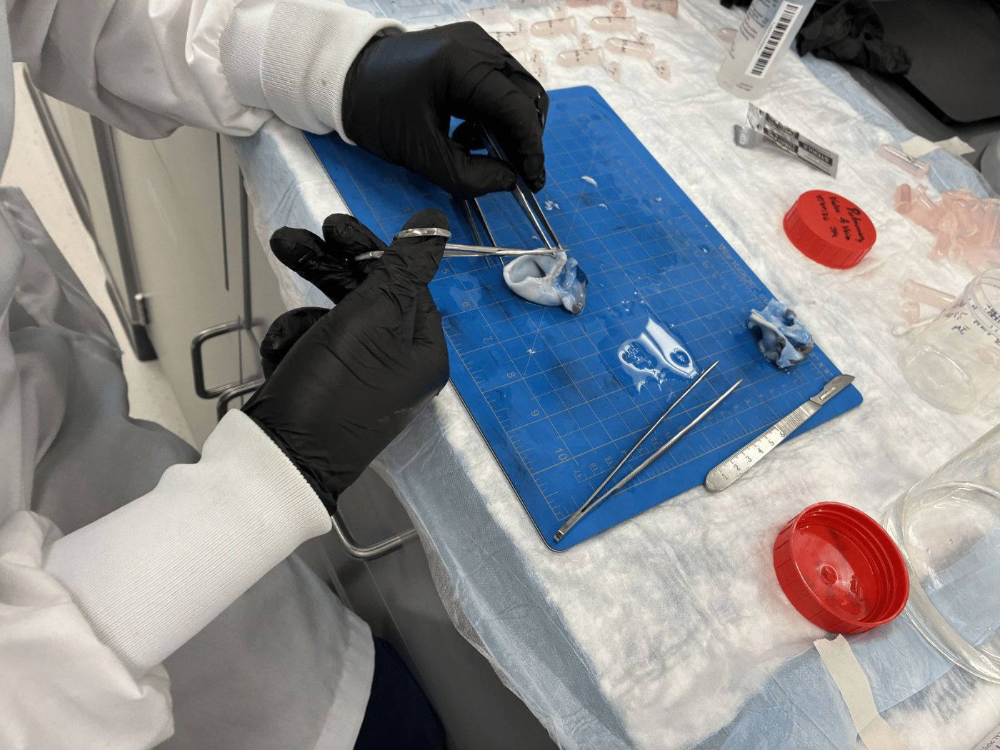

01 · System overview
At a Glance
Each component sits on its own shelf in a vertical enclosure, so air passes through them in order before reaching the sample.
02 · Physics
From Pressure to Pore Size
The sample is soaked in a wetting liquid: isopropyl alcohol at first, and eventually Galwick. Liquid only leaves a pore once the gas pressure overcomes its surface tension, so the pressure at which each pore opens gives its diameter:
Here P is the differential gas pressure, d is the pore diameter, γ is the liquid's surface tension, and θ is the contact angle between the liquid and the sample.
Bubble point
Where wet flow first lifts off zero. This is the largest pore.
Smallest pore
Where the wet curve finally merges into the dry curve and every pore is open.
03 · Build & lab work
Enclosure & Samples
Besides the porometer, I worked with the lab's electrospinner, ran biaxial material testing, and dissected tissue to prepare samples.

